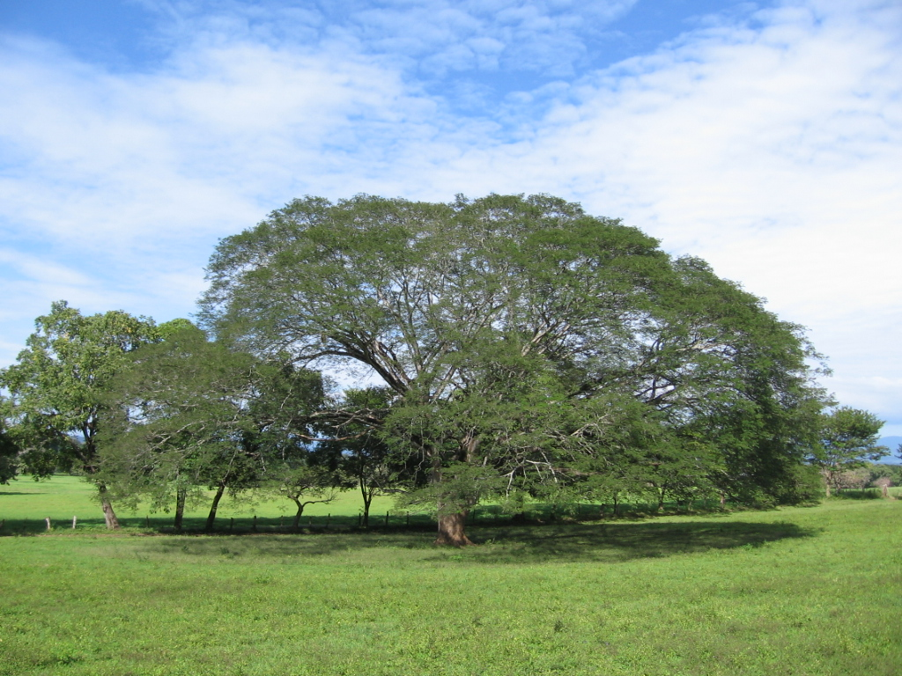
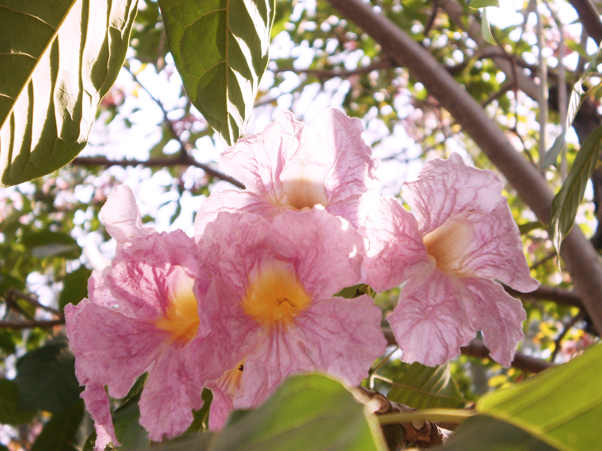

Flora
La parota
Enterolobium cyclocarpum
Árbol tropical de gran tamaño, conocido por su amplia copa. Proporciona sombra y forma parte del paisaje de Colima.
Ver observaciones ↗Descubre la belleza natural de nuestro estado: desde árboles tropicales y aves coloridas hasta la sorprendente vida marina del Pacífico mexicano. Cada especie tiene una historia que merece ser conocida.
Explorar especies ↓ Ver iNaturalist ↗Explora especies, conoce sus características y escucha grabaciones de sus sonidos.

Enterolobium cyclocarpum
Árbol tropical de gran tamaño, conocido por su amplia copa. Proporciona sombra y forma parte del paisaje de Colima.
Ver observaciones ↗
FloraTabebuia rosea
Árbol ornamental conocido por sus flores rosadas, que embellece calles y espacios verdes.
Ver observaciones ↗
Iguana iguana
Reptil de zonas tropicales que puede vivir entre árboles y cerca del agua. Es importante respetar su hábitat y no capturar ejemplares silvestres.

Ortalis sp.
Ave de ambientes tropicales cuyos llamados forman parte de los sonidos de la naturaleza.

Echinometra vanbrunti
Equinodermo del Pacífico oriental que forma parte de la diversidad de los ambientes marinos costeros.
Ver observaciones ↗
Pithecellobium dulce
Árbol tropical cuyos frutos son reconocibles y forman parte de los recursos vegetales de la región.
No encontramos especies con ese nombre. Prueba otra búsqueda.
La variedad de climas y relieves permite la existencia de ambientes terrestres y marinos.
Albergan árboles, reptiles, mamíferos, insectos y plantas adaptadas a las estaciones.
Son refugio y zonas de alimentación para peces, crustáceos y numerosas aves.
Sus condiciones ambientales favorecen comunidades vegetales distintas de las zonas costeras.
No captures animales silvestres, evita dejar basura en playas y bosques y respeta las plantas. Puedes contribuir a la ciencia ciudadana registrando tus observaciones en iNaturalist.